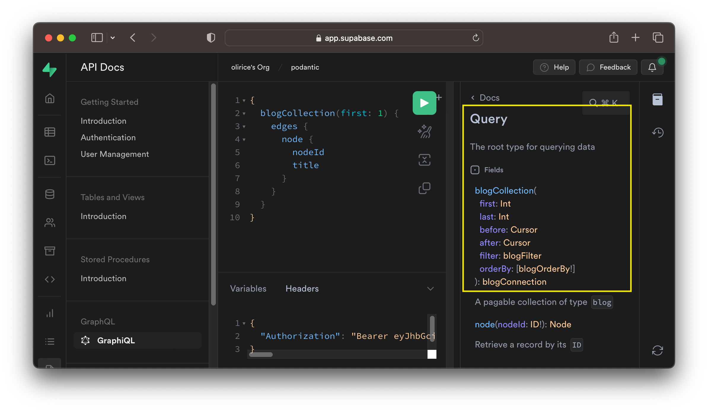

Supabase
The Supabase GraphQL API is automatically reflected from your database's schema using pg_graphql. It supports:
- Basic CRUD operations (Create/Read/Update/Delete)
- Support for Tables, Views, Materialized Views, and Foreign Tables
- Arbitrarily deep relationships among tables/views
- User defined computed fields
- Postgres' security model - including Row Level Security, Roles, and Grants
All requests resolve in a single round-trip leading to fast response times and high throughput.
If you haven't created a Supabase project, do that here so you can follow along with the guide.
API
If you're new to GraphQL or Supabase, we strongly recommend starting with Supabase GraphQL by following the Supabase Studio guide.
Fore more experienced users, or when you're ready to productionize your application, access the API using supabase-js, GraphiQL, or any HTTP client, for example cURL.
Supabase Studio
The easiest way to make a GraphQL request with Supabase is to use Supabase Studio's builtin GraphiQL IDE.
You can access GraphiQL here by selecting the relevant project. Alternatively, navigate there within Studio at API Docs > GraphQL > GraphiQL.

Type queries in the central query editor and use the green icon to submit requests to the server. Results are shown in the output display to the right of the editor.
To explore the API visually, select the docs icon shown below and navigate through each type to see how they connect to the Graph.

pg_graphql mirrors the structure of the project's SQL schema in the GraphQL API. If your project is new and empty, the GraphQL API will be empty as well, with the exception of basic introspection types. For a more interesting result, go to the SQL or table editor and create a table.

Head back to GraphiQL to see the new table reflected in your GraphQL API's Query and Mutation types.

If you'd like your type and field names to match the GraphQL convention of PascalCase for types and camelCase for fields, check out the pg_graphql inflection guide.
HTTP Request
To access the GraphQL API over HTTP, first collect your project reference and API Key.
cURL
To hit the Supabase GraphQL API using cURL, submit a POST request to your GraphQL API's URL shown below, substituting in your PROJECT_REF and passing the project's API_KEY as the apiKey header:
1 2 3 4 | |
In that example, the GraphQL query is
1 2 3 4 5 6 7 8 9 | |
and there are no variables
1 | |
supabase-js
The JS ecosystem supports multiple prominent GraphQL frameworks. supabase-js is unopinionated about your GraphQL tooling and can integrate with all of them.
For an example integration, check out the Relay guide, complete with Supabase Auth support.
GraphiQL
If you'd prefer to connect to Supabase GraphQL using an external IDE like GraphiQL, save the HTML snippet below as supabase_graphiql.html and open it in your browser. Be sure to substitute in your PROJECT_REF and API_KEY beneath the EDIT BELOW comment:
1 2 3 4 5 6 7 8 9 10 11 12 13 14 15 16 17 18 19 20 21 22 23 24 25 26 27 28 29 30 31 32 | |
Version Management
To maximize stability, you are in control of when to upgrade your GraphQL API. To see which version of pg_graphql you have, and the highest upgrade version available, execute:
1 | |
Which returns a table, for example:
| name | default_version | installed_version | comment |
|---|---|---|---|
| pg_graphql | 1.2.0 | 1.1.0 | GraphQL support |
The default_version is the highest version available on your database. The installed_version is the version currently enabled in your database.
If the two differ, as in the example, you can upgrade your installed version by running:
1 2 | |
To upgrade your GraphQL API with 0 downtime.
When making a decision to upgrade, you can review features of the upgraded version in the changelog.
Always test a new version of pg_graphql extensively on a development or staging instance before updating your production instance. pg_graphql follows SemVer, which makes API backwards compatibility relatively safe for minor and patch updates. Even so, it's critical to verify that changes do not negatively impact the specifics of your project's API in other ways, e.g. requests/sec or CPU load.
Local Development
When starting a local project through the Supabase CLI, the output of supabase start provides the information needed to call the GraphQL API directly. You can also use the Supabase Studio url to access the builtin GraphiQL IDE.
1 2 3 4 5 6 7 8 9 10 11 12 | |
Term Reference
Project Reference (PROJECT_REF)
Your Supabase project reference or PROJECT_REF is a 20 digit unique identifier for your project, for example bvykdyhlwawojivopztl.
The project reference is used throughout your supabase application including the project's API URL. You can find the project reference in by logging
in to Supabase Studio and navigating to Settings > General > Project Settings > Reference ID

API Key (API_KEY)
Your Supabase API Key is a public value that must be sent with every API request. The key is visible in Supabase Studio at Settings > API > Project API keys